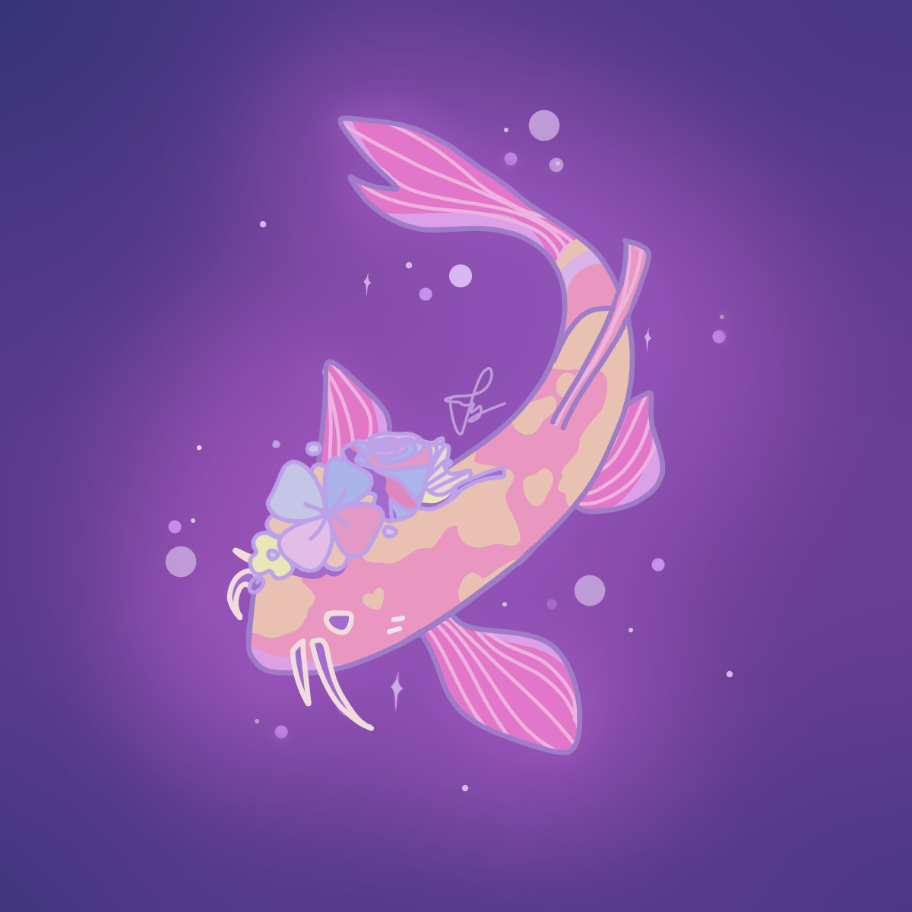

promotion flyer for a drag show hosted by uc berkeley's asuc superb (student union events/recreation)

just a doodle

drawing of ramona flowers from the movie scott pilgrim vs. the world. great movie!

another promotion flyer for a superb carnival event

promotion of a superb art show except i drew it on a paper and stuck it near the entrance, then sat on a wall next to it and ushered people in

completed the infamous blender donut tutorial

flyer for a fictional kaytranada concert
just a doodle

part of my project for my class Drugs and the Brain about the rat park experiments

just a doodle
all assets on this website are drawn/animated by me!